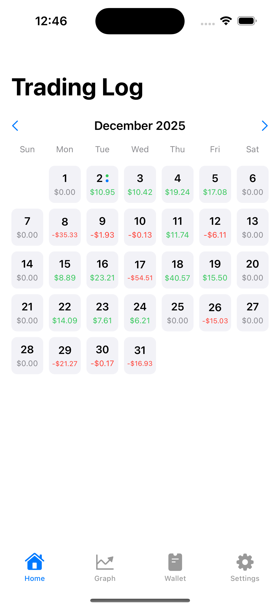
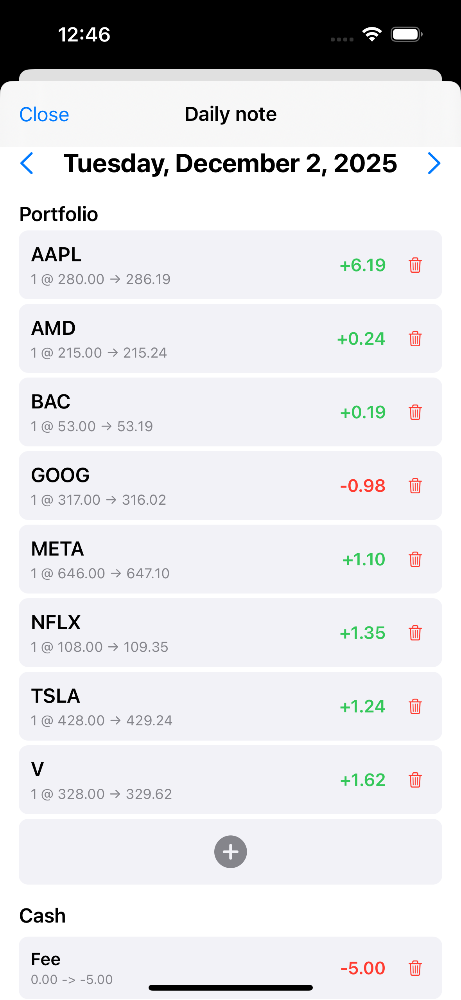
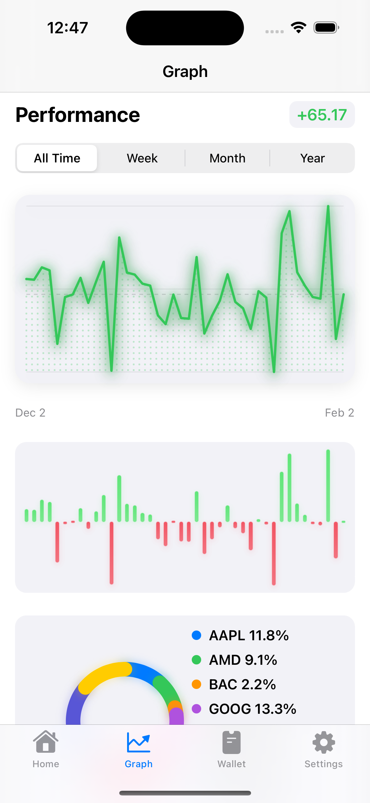

Trading Log is a simple iOS app for capturing your trades, tagging setups, and reviewing performance in seconds. Built to keep your process clean without the spreadsheet headache.
Log entries in seconds, review patterns weekly, and improve your discipline one session at a time.
Get on the App Store


Save date, symbol, size, and notes with a clean form.
Label trades by strategy to see what really works.
Spot win-rate trends and recurring mistakes in minutes.
Everything stays on your device unless you export it.